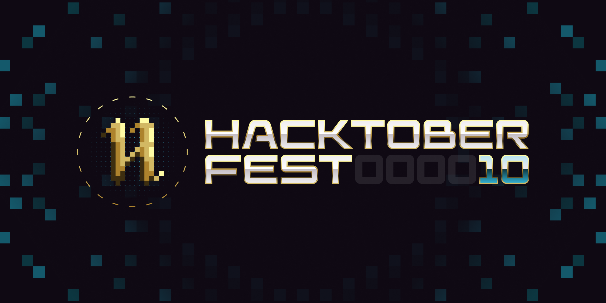

Welcome to the My Fav Superhero project!
The My Fav Superhero project is a fantastic web application designed to cater to all levels of
superhero enthusiasts, from die-hard fans to those just looking for a bit of fun and excitement.
With its user-friendly interface, you can easily search for your beloved superhero and instantly
find captivating images that showcase their heroic prowess. But the real magic lies in the random
superhero generator feature, which surprises users with exhilarating images of various superheroes
with just a click. It's like a virtual treasure trove of awe-inspiring heroism waiting to be
explored! Whether you're looking to feed your fandom or simply curious to discover new and
intriguing superheroes, this project promises an unforgettable experience. Get ready to embark on a
visual journey through the extraordinary world of superheroes, where imagination knows no bounds!

HACKTOBERFEST !!
Hacktoberfest is DigitalOcean’s annual event that encourages people to contribute to open source
throughout October. Much of modern tech infrastructure-including some of DigitalOcean’s own
products-relies on open-source projects built and maintained by passionate people who often don’t have
the staff or budgets to do much more than keep the project alive. Hacktoberfest is all about giving back
to those projects, sharpening skills, and celebrating all things open source, especially the people that
make open source so special.
For the past 10 years, thousands of people-coders and non-coders alike-have participated in
Hacktoberfest to support the projects they use and love, learn and practice skills that will enhance
their careers, and meet new people who love open source as much as they do.